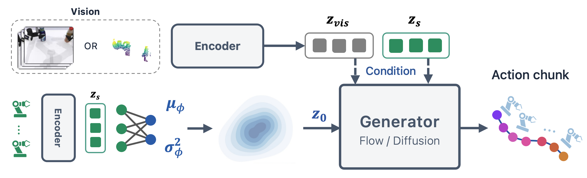
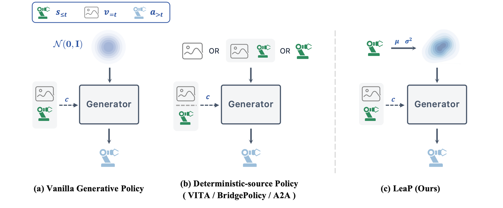
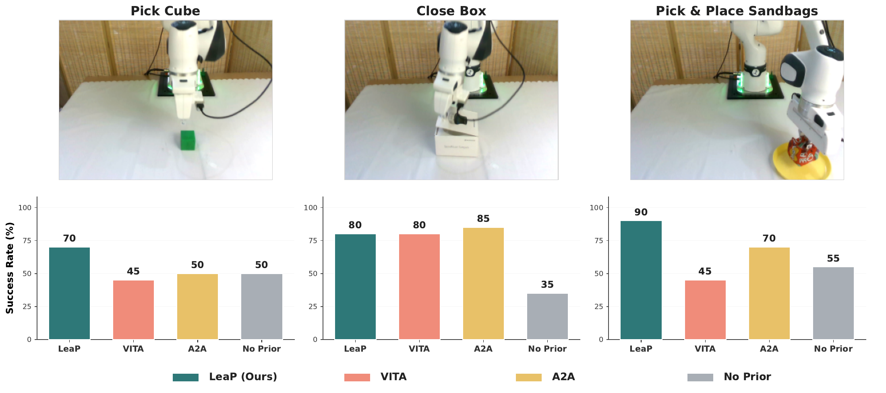
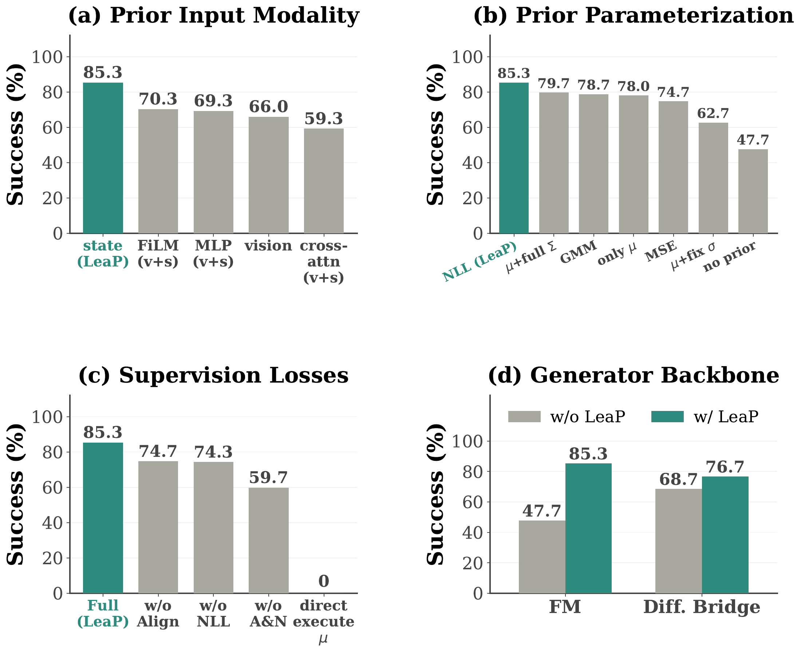

A state-informed prior
A two-layer MLP predicts a mean and diagonal variance from proprioception. Each time step samples independent noise from the shared distribution.
z₀ = μ(s) + σ(s) ⊙ ε
A Learnable Source Prior
for Generative Robot Policies
Xiu-Shen Wei Group · Southeast University
Average success
15 RoboTwin tasks
Over the same-architecture
NoPrior baseline
Average success
3 real-world tasks
Prior-head parameters
1.6% of the 13.22M model
Learn where to start generating actions, with a lightweight prior that adapts to the robot’s own state.
Submission presentation with updated author credits; original narration and experimental slides preserved. The video reports an earlier BridgePolicy simulation score (60.8%); the paper and results below report 61.4%.
Generative robot policies typically begin with an observation-independent standard Gaussian. LeaP learns the source distribution itself. A lightweight MLP predicts the mean and state-adaptive variance of a proprioception-conditioned diagonal Gaussian. The generator starts with an informed yet stochastic sample, then refines it using visual and proprioceptive observations. The generator architecture and inference solver stay unchanged.
The prior anchors generation in a state-dependent neighborhood. The generator learns the fine-grained actions.

A two-layer MLP predicts a mean and diagonal variance from proprioception. Each time step samples independent noise from the shared distribution.
Flow matching learns action refinement. Negative log-likelihood supervises the source density. Contrastive alignment pairs source samples with expert actions.
The source sample passes to a generator conditioned on both vision and state. The same prior improves flow-matching and diffusion-bridge variants in the paper.

Evaluated on 15 simulation tasks and three real-world manipulation tasks. Reported results are from the paper.
+25.5 pp
NoPrior uses the same encoder, flow-matching generator and pipeline as LeaP, but starts from a standard Gaussian. LeaP improves average success from 56.1% to 81.6%.
Explore the full experiments
Learning a state-adaptive variance matters: LeaP reaches 85.3% on the three-task ablation, compared with 78.0% for a mean-only source and 62.7% for a learned mean with fixed variance. The prior also improves diffusion-bridge success from 68.7% (deterministic prior mean) to 76.7%.
Ablations use three representative tasks and one random seed; they are trends, not multi-seed estimates.

Scope: evaluated on tabletop manipulation. Transfer to vision-language-action models or dexterous hands has not yet been established.
Policy code, RoboTwin integration, training configuration and CPU regression tests are available on GitHub.
Get the codeEnvironment setup and the RoboTwin pipeline.
What has been checked, and the limits of those checks.
Source release. Model weights, demonstrations and simulator assets are not included. LeaP contributions use the MIT License; third-party components retain their own licenses.
@article{dai2026leap,
title = {Where Should Action Generation Begin? A Learnable Source
Prior for Generative Robot Policies},
author = {Dai, Meipo and Zhuang, Qiyuan and Xu, He-Yang and
Shuai, Ying-Jie and Wang, Yijun and Dou, Qi and Wei, Xiu-Shen},
journal = {arXiv preprint arXiv:2606.17408},
year = {2026},
url = {https://arxiv.org/abs/2606.17408}
}Accepted at CoRL 2026. The citation above links to the available arXiv version.